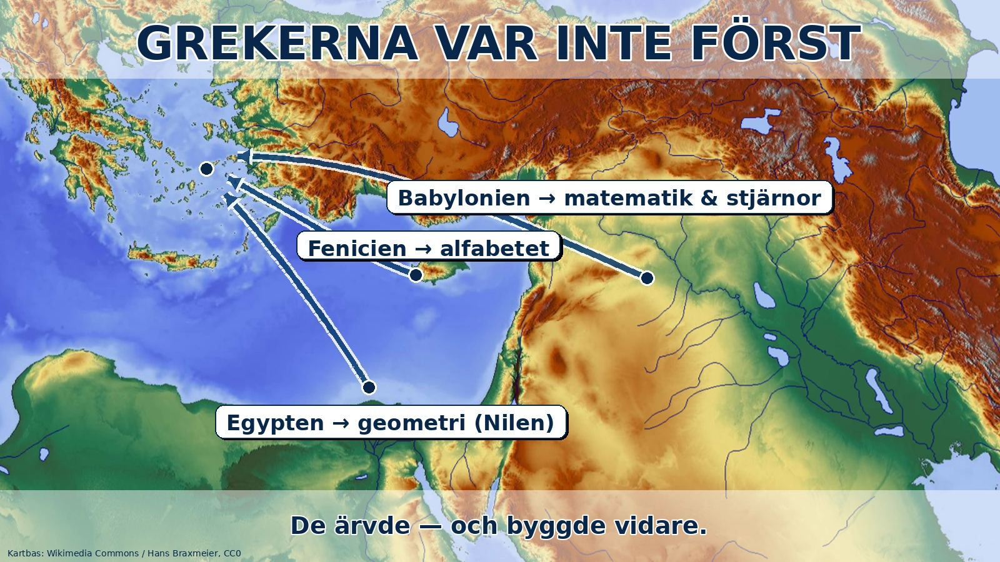

Vi berättar ofta historien som om civilisationen börjar med grekerna. Demokrati, filosofi, vetenskap, teater — allt sägs ha "uppfunnits" i antikens Grekland, som om det inte funnits något värt att nämna före dem. Grekerna själva var gärna med på den bilden. Men den är inte sann, och det märkliga är att sanningen gör grekerna mer imponerande, inte mindre. För nästan allt vi tackar grekerna för hade rötter hos de folk du redan läst om i förra delen — mesopotamierna, egyptierna, fenicierna. Grekerna var inte först. De var något annat, och kanske viktigare.

Skriften kom från fenicierna. Standardtexten säger det redan: grekerna tog alfabetet från fenicierna, ett handelsfolk vid Medelhavets östra kust. Grekerna förbättrade det genom att lägga till vokaler — men de uppfann inte skrivandet. Det hade funnits i tusentals år, ända sedan Mesopotamien uppfann kilskriften för att räkna säd. Grekerna ärvde en färdig idé och gjorde den vassare.
Matematiken och stjärnorna kom från babylonierna. Här blir det riktigt konkret. Varför har en cirkel 360 grader? Varför har en timme 60 minuter och en minut 60 sekunder? Inte för att grekerna bestämde det, utan för att babylonierna räknade i ett system byggt på talet 60, långt före grekerna. Deras sätt att dela upp cirkeln och tiden lever kvar varje gång du tittar på en klocka eller mäter en vinkel. Babylonierna var också skickliga stjärnskådare som noggrant kartlade himlakropparnas rörelser under århundraden. Mycket av den kunskap grekiska astronomer senare byggde vidare på kom ursprungligen från babyloniska observationer.
Geometrin kom (delvis) från Egypten. Kommer du ihåg Nilen från förra delen? Varje år svämmade den över och suddade ut gränserna mellan åkrarna, så egyptierna blev tvungna att mäta upp och dela in marken på nytt om och om igen. Ur det praktiska behovet växte en tidig kunskap om geometri — hur man mäter ytor, vinklar och avstånd. Enligt de gamla berättelserna reste grekiska tänkare som Thales och Pythagoras till Egypten för att lära, och tog med sig den kunskapen hem. Det som senare blev grekisk geometri hade alltså en fot i Nilens dyiga åkrar.
Till och med berättelserna var äldre. Även myterna, som kändes så grekiska, hade äldre släktingar. I Mesopotamien fanns berättelser om en väldig översvämning som dränkte världen, och om hjältar som sökte odödlighet — det mesopotamiska Gilgamesh-eposet är många hundra år äldre än Homeros dikter. Historier vandrade mellan folk längs handelsvägar och hav, förändrades på vägen, och dök upp igen i ny språkdräkt.
Så vad var det då grekerna gjorde? Om de nu ärvde allt detta — vad är då deras storhet? Svaret är att de gjorde något nytt med arvet. De tog andras uppfinningar och systematiserade dem: samlade, ordnade, ifrågasatte och byggde vidare. Babylonierna observerade stjärnorna; grekerna började fråga varför de rörde sig som de gjorde. Egyptierna mätte mark; grekerna gjorde geometrin till ett system av bevis. Fenicierna gav dem bokstäverna; grekerna använde dem för att skriva filosofi. Grekernas gåva var inte att vara först — det var att fråga, ordna och förbättra det andra redan börjat.
Och det är faktiskt en mer hederlig och mer spännande berättelse än "grekerna hittade på allt". Ingen kultur bygger sin storhet från noll. Alla står på axlarna av dem som kom före. Grekerna stod på mesopotamiernas, egyptiernas och feniciernas axlar — precis som andra snart skulle stå på grekernas. Det mönstret, att kulturer ärver och bygger vidare av varandra, ska vi möta igen och igen. Nästa gång blir det romarna som ärver — och gissa av vem.